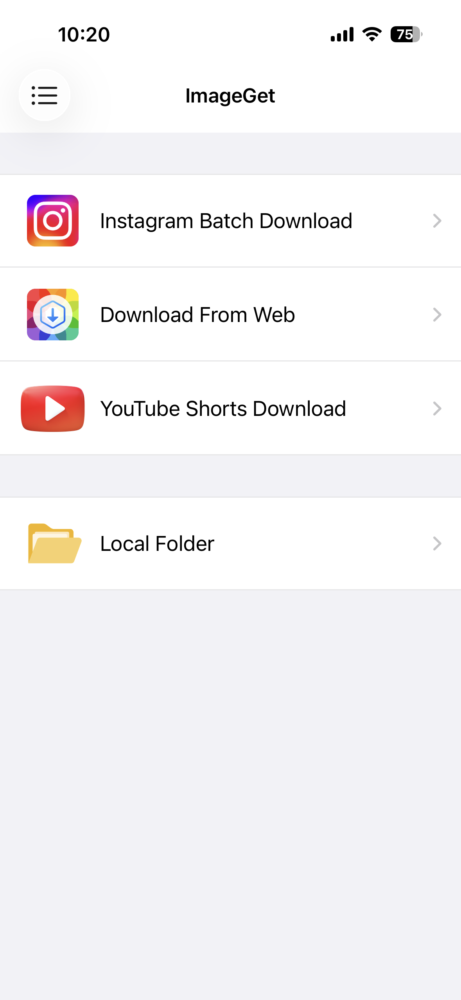
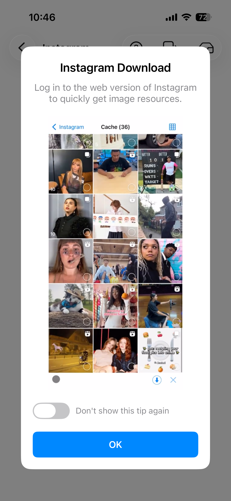
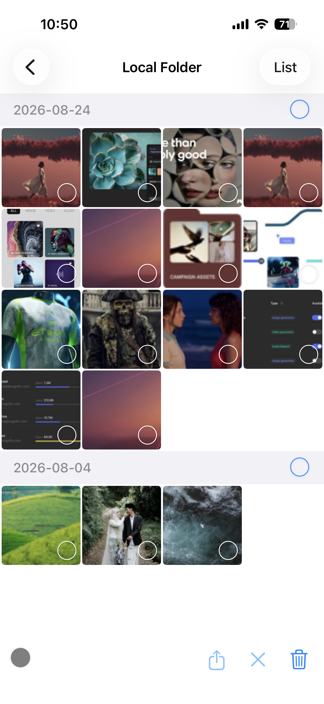

Instagram-Fotos, Reels und Videos speichern
Instagram-Fotos und -Videos in der Mediathek zu speichern bedeutete früher Screenshots – Qualitätsverlust, die Oberfläche im Bild und Wasserzeichen in der Ecke. ImageGet macht das anders. Melde dich mit deinem Instagram-Konto an und browse wie gewohnt – ImageGet sammelt automatisch jedes Foto, jedes Reel und jedes Video, das du siehst, und du entscheidest, was heruntergeladen wird. So speicherst du Instagram-Fotos, Reels und Videos, Schritt für Schritt.
Lade ImageGet kostenlos herunter – Instagram-Fotos, Reels und Videos mit einem Tippen speichern.
ImageGet herunterladenSchritt 1: Bei Instagram anmelden
Öffne ImageGet und tippe auf den Instagram-Tab. Melde dich mit deinem Instagram-Konto an – die App verbindet dich sicher mit deinem Feed, deinen Profilen und der Explore-Seite. Nach der Anmeldung kannst du Beiträge, Profile und Explore-Seiten genau so durchsuchen wie in der offiziellen App. Für Instagram-Inhalte musst du keine Links kopieren: Alles, was du dir ansiehst und wonach du suchst, ist direkt da und bereit zum Speichern.

Schritt 2: Browsen – Fotos, Reels und Videos werden automatisch gesammelt
Sobald du angemeldet bist, browse einfach wie gewohnt durch Instagram. Während du durch deinen Feed, Profile und die Explore-Seite scrollst, sammelt ImageGet im Hintergrund automatisch jedes Foto, jedes Reel und jedes Video. Du musst nichts antippen und keine Links kopieren – alles, was du siehst, wird beim Browsen erfasst.

Schritt 3: Auswählen und herunterladen
Wenn du fertig bist, öffne den Cache und sieh dir alles an, was ImageGet gesammelt hat. Wähle die Fotos, Reels und Videos aus, die du behalten möchtest, und lade sie mit einem Tippen in deine Fotomediathek. Fotos werden in voller Auflösung gespeichert, Reels als Videos mit Ton – ohne Komprimierung, ohne Wasserzeichen. Aktiviere Smart Filtering, um unscharfe Vorschaubilder zu überspringen und nur die hochauflösenden Bilder zu behalten.

Tipps zum Speichern aus Instagram
- Ein ganzes Profil auf einmal speichern — hole alle Fotos und Videos eines Kontos in einem Durchgang. Ideal, um den kompletten Feed einer Fotografin oder eines Künstlers zu sichern.
- Smart Filtering nutzen — überspringe niedrig aufgelöste Vorschaubilder, Profilbilder und Icons und behalte nur die hochwertigen Bilder, die du wirklich willst.
- Urheberrecht beachten — speichere nur Fotos und Videos, die du behalten darfst, und nenne immer die ursprüngliche Urheberin oder den Urheber, wenn du etwas erneut teilst.
FAQ
Kann ich Instagram-Reels und -Videos herunterladen?
Ja — Reels und Videos werden mit Ton in deiner Fotomediathek gespeichert, ganz ohne Bildschirmaufnahme.
Ist das Speichern von Instagram-Fotos kostenlos?
Ja — ImageGet enthält eine 7-tägige kostenlose Testphase, danach 3 kostenlose Downloads für Instagram-Bilder und -Videos. Mit Premium sind Speichern und Werbefreiheit unbegrenzt.
Brauche ich Screenshots oder einen Bildschirmmitschnitt?
Nein. ImageGet speichert Instagram-Fotos und Reels direkt in voller Qualität — Screenshots oder Bildschirmaufnahmen sind nicht nötig.
Wird in voller Qualität gespeichert?
Ja — ImageGet speichert Instagram-Fotos und Reels in voller Auflösung, ohne Komprimierung und ohne Wasserzeichen.
Sehen. Speichern. Einfach.
Lade ImageGet kostenlos herunter und speichere Instagram-Fotos, Reels und Videos mit einem Tippen.
ImageGet herunterladen